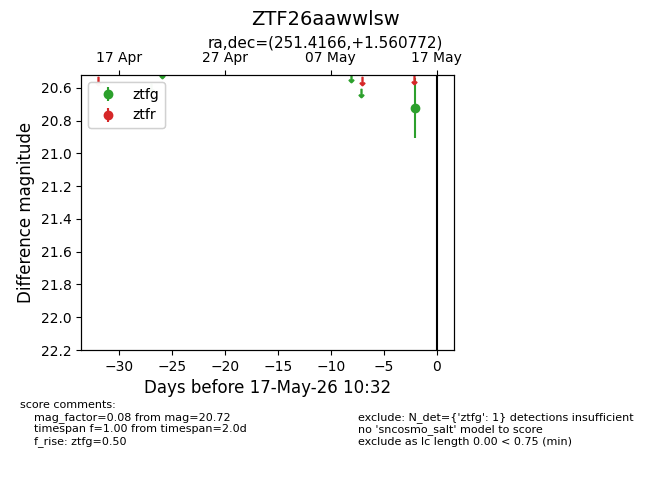
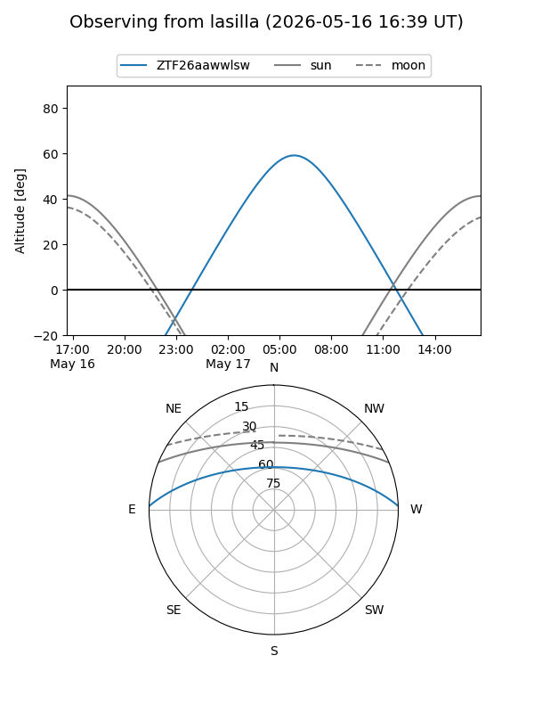
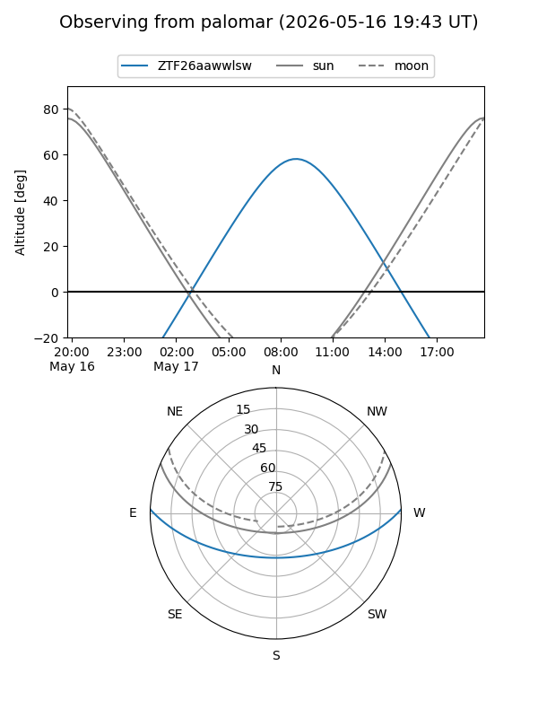

ZTF26aawwlsw
Target ZTF26aawwlsw at 2026-05-17 10:34
Aliases and brokers:
FINK: link
Lasair: link
ALeRCE: link
alt names
ZTF26aawwlsw (ztf,fink_ztf)
Coordinates:
equatorial (ra, dec) = 251.4166,+1.56077
equatorial (HMS+DMS) = 16:45:39.98,+01:33:38.78
galactic (l, b) = (18.8752,+28.45762)
Flags:
Photometry:
last ztfg=20.72
1 ztfg detections
Lightcurve

Visibility


Additional plots